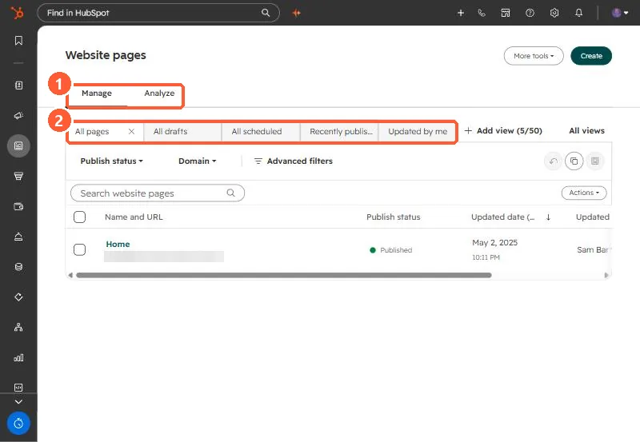

Short answer
Content, Website Pages (and Landing Pages) has a Manage tab with saved views for all pages, drafts, scheduled, recently published and updated by me, plus status and domain filters. The Analyze tab shows performance reports such as views and bounce rate, and needs Marketing Hub or Content Hub Professional or Enterprise. You can replace the default Analyze tab with one of your own dashboards.
1. Manage


2. Views worth adding
- Drafts older than a few months, to review before Account Cleanup archives them.
- Pages per domain, if you run more than one.
- Pages updated by me, for your own work.
3. Analyze
Default reports cover page views, bounce rate, CTA (legacy) actions, and sessions, new contacts and customers over time. Swap in a custom dashboard if your team tracks different metrics. Speed problems are covered in speeding up a landing page.